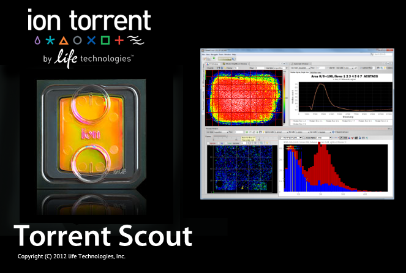

Open Torrent Scout with...
1.2 GB memory (Java 32 bit) (cropped data)
2 GB memory (Java 64 bit) (314 chips) (default)
3 GB memory (Java 64 bit) (316 chips)
4 GB memory (Java 64 bit) (316 chips)
5 GB memory (Java 64 bit) (318+ chips)
6 GB memory (Java 64 bit) (318+ chips)
*To launch TorrentScout, you will need
Sun Java
. For 1.5+ GB memory and 316+ chips, you will need
Java 64 bit
Please go to the
Community Torrent Scout
page for documentation, or send an email to
Chantal Roth
for help or feedback.